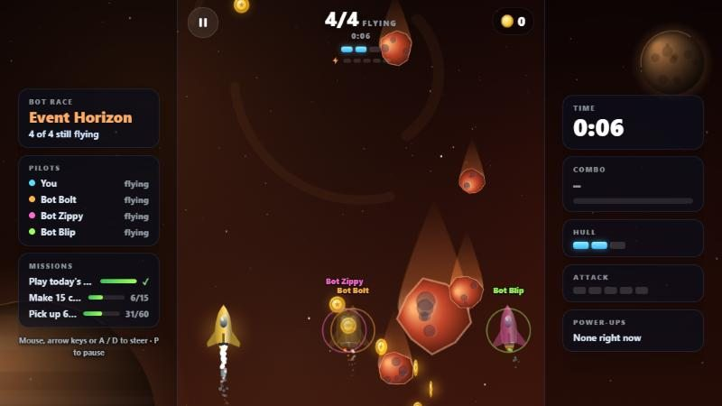

Home › Online races
Online races
Up to four pilots fly through the same meteor storm at the same time, and the last ship still flying wins. Here is how to find a race, how attacks work and how to come out on top.
How a race works
Press Online race on the main menu. Every pilot in a race gets exactly the same storm: the same rocks, coins and power-ups, falling at the same moments. You see your rivals' ships flying beside yours, each in its own colour, so you always know who is still in.
Races are designed to be fair, so flying skill is the only thing that counts:
- Every ship has the same three hull cells.
- Ship perks, hangar upgrades and star skills are switched off. Your ship and trail are just for looks.
- Power-ups are limited to Shield, Magnet and Blast. Slow-mo isn't used, because it would put your storm out of step with everyone else's.
When your hull runs out you are knocked out, and you can watch the rest of the race. The order of the knock-outs decides the places: the last pilot flying wins.

Four ways to race
Quick match
The fastest way to play. Quick match puts you in a public room with other players who are looking for a race at the same moment. The race starts by itself: straight away once four pilots are in, or after a few seconds' wait with two or three. If nobody turns up within about 15 seconds, a button offers you a race against the bots instead.
Create a room
To race your friends, press Create room. You get a four-letter room code. Read it out, or press Copy invite link and send the link. A friend who opens the link joins your room straight away. As the host, you press Start race when everyone is in; you need at least two pilots.
Join a room
Got a code from a friend? Press Join room, type the four letters and press Join.
Race the bots
Race the bots puts you against three computer pilots, with no internet connection needed once the game has loaded. The bots start out beatable and get sharper as you win: after a couple of wins one of them improves, and after fifteen wins all three fly at their best. It's the perfect way to learn how races work.
Your pilot name is made up by the game from two words, like “Swift Falcon”. Press the dice button on the online screen for a new one. There is no chat in Meteor Swerve, so names are the only thing other players see apart from your ship.
The attack meter
Races are not only about surviving. Every close call charges your attack meter, and close calls in a chain of three or more charge it twice as fast. Coins add a little charge too. When the meter is full, your attack fires on its own: red-hot rocks drop on every rival, aimed at where their ships are.
- When an attack is coming your way, you get a warning (“INCOMING FROM …”) in the attacker's colour, and the red rocks are marked before they fall. Move off the marked spot.
- A Blast does double duty in a race: it clears the screen around you and sends a shockwave of red rocks to every rival.
- However many attacks are sent at you, only so many red rocks can fall at once, so a race never becomes impossible.
How the storm grows
A race storm starts like the first sectors of the campaign and then builds up much faster:
- After about 15 seconds comets start to streak in.
- After about 35 seconds splitting ice joins them.
- After about a minute lasers begin to fire.
- After about a minute and a half comes overtime. A banner warns you, and from then on the storm keeps getting thicker until somebody falls.
Overtime makes sure no race drags on, so there is always time to squeeze in a rematch.
Rewards
You keep every coin you pick up during a race. On top of that, the winner gets a bonus that grows with the size of the race: 30 coins for beating one rival, 45 for two and 60 for three. In a race of three or more, second place earns 20 coins, and in a full race of four, third place earns 10. Press Race again on the results screen for a rematch with the same pilots. Races also count towards the daily missions “Finish races” and “Win a race”.
Racing tips
- Hunt close calls early. The first half minute is the calmest part of the race and the best time to fill your attack meter.
- Save your hull. With only three cells for everybody, the pilot who takes the fewest hits usually wins. Don't trade a hull cell for a coin.
- Grab every Shield. A shield blocks a red rock as well as a normal one.
- Move when you see a warning. Red rocks are aimed at where you were when the attack was sent, so a clear sideways move is enough.
- Use a Blast at the right moment. In a crowded storm it saves you and hits everyone else at once.
Connection problems
Online races connect the players' devices directly to each other. When a network won't allow that (often a home Wi-Fi on one side and a phone on mobile data on the other), the game passes the race through a relay server instead. Most of the time it just works. If it doesn't, the message on the screen tells you why:
| Message | What to do |
|---|---|
| No room with that code | Check the four letters. A room disappears when its host leaves it. |
| That room is full / That race has already started | Rooms hold four pilots and can't be joined mid-race. Ask the host to make a new room after the race. |
| That room runs a different version of the game | Reload the page on both devices so everyone has the latest version. |
| Couldn't connect to that room | Some networks block direct connections. Try another network, for example Wi-Fi instead of mobile data. School and office networks are often the problem. |
| No pilots found right now | Nobody else is in quick match at the moment. Try again later, invite a friend with a room code, or race the bots. |
| The host closed the room | The player who made the room left. Make a new room or use quick match. |
Fair play and privacy
The game checks the messages that players' devices send each other and drops players whose game sends impossible moves or floods the room. There is no chat, no voice and no way to send text to another player. To connect devices directly, the other players' browsers can see your device's internet (IP) address, which is how direct connections work. The privacy policy explains this in more detail.